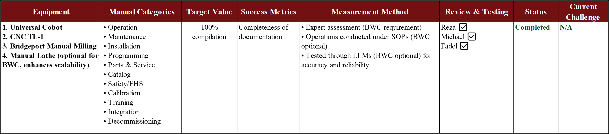
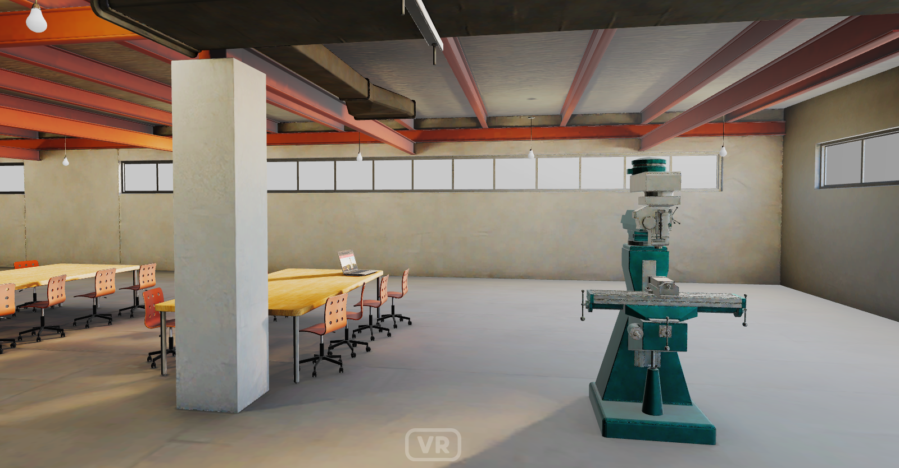

SIGHT: Safety Immersion and Gamified Hazard Training for Industry 5.0
Meeting 06: Updates on Chatbot Advancements and VR Developments
September 26, 2025
Meeting Goals
Review and approve Meeting 05 minutes and action items
Update the team on administrative tasks that were carried out
- Status of Project Management Plan (PMP) submission.
- Progress on the Project Risk Mitigation Plan (Leads: Arthur, Fadel, Ibrahim).
- Update on Q1 progress report (Lead: Jay Shan + Discovery Center).
- Status of Project Management Plan (PMP) submission.
Technical updates:
- Phase 1 (Q1): Status of standardized documentation for the Bridgeport Mill, TL-1 CNC, and Universal Cobot; progress on image database creation.
- Phase 2 (Q2): Initial findings and next steps for the RAG Chatbot; preliminary work on the AI Image Classification system.
- Phase 1 (Q1): Status of standardized documentation for the Bridgeport Mill, TL-1 CNC, and Universal Cobot; progress on image database creation.
Industry Partner Collaboration: Updates from MaxByte and MeetKai
Consultant Updates
Risk mitigation/log and further updates.
Review Action Items from Previous Meeting and Approve Minutes
Fadel M. Megahed
Review of Action Items and Approval of Meeting Minutes
Attendance Sign as Required By BWC
Use your full name (first and last) when joining the Zoom call — even if you’re in a shared conference room.
This helps us log attendance accurately for BWC reporting.
If you’re in a conference room:
- Only one computer should have audio enabled.
- All other devices must be muted (microphone and speaker).
- Only one computer should have audio enabled.
Administrative Updates
Fadel Megahed, Arthur Carvalho, Jay Shan
Deliverables Submitted so Far
A screenshot of the deliverables tab from the Ohio BWC/WSIC online portal.
Deliverable: Project Management Plan (Resubmitted)
Deliverable: Risk Mitigation Plan (Arthur; To-be-Submitted Soon)
Status on Industry and Consultant Invoices
We are currently creating three service requistions for POs to cover the entire year.
Once the POs are issued, we will process each invoice with the respective PO numbers.
Update on Q1 Progress Report (Jay Shan)
Jay to discuss needs from the industry partners, consultant, and the Discovery Center
Consultant Updates
Lora Cavuoto
Updates on Q1 Contributions
IRB Submission
- Current status
- Next steps
Safety Materials (RAG)
- Collection progress
- Remaining items
Technical Updates: RAG Chatbot
Fadel Megahed, Michael Wise, and Ibrahim Yousif
Recall: 1.1. Compile Machine Manuals (Finalization)
Recall: 1.2-1.3 Create Image Database & Image Tagging (Finalized)
- We are currently using Roboflow to store the images and their associated metadata.
Q2: 2.1. SIGHT Hosted Chatbot (V. 3.0.3)
Available at: https://sight.fsb.miamioh.edu/
Q2: 2.2. Image Classification and Object Detection Results

Industry Partner Updates
MeetKai Virtual Environment Demonstration
MeetKai Deliverables Table
| Description and Justification |
|---|
| Pre-processing: Collaborative planning, data, & image collection. Processing & digitizing for various environments. |
| AI Model Generation: RAG & Image Recognition |
| Integrate “Speech-Speech” AI Training |
| Develop and Gamify: Interactive, scalable, web-based VR training system |
| Provide high quality 3D Environmental and Equipment Models |
| Integrate real-world industrial hazard models into VR scenarios |
| Tracking and Analytics: Provide a robust set |
| Support: Pilot testing and system refinement |
MaxByte Delivery Table
| Milestone | Deliverables |
|---|---|
|
Q1 - M1 Initial Documentation & Infra |
• Machine assessment and requirement gathering • M2M OT-IT Integration Server configuration & software installation • Server configuration & software installation • Kepware license management |
|
Q2 - M2 Visibility |
• EDGE Gateway / Custom Script development and deployment • Energy Kit installation & configuration • Sensor integration for condition monitoring • Application development, configuration, customization, migration & maintenance • Pallet truck integration with industrial autonomous vehicle platform |
Discussion
Discussion

Project funded by the Ohio BWC through their Worker Safety Innovation Center